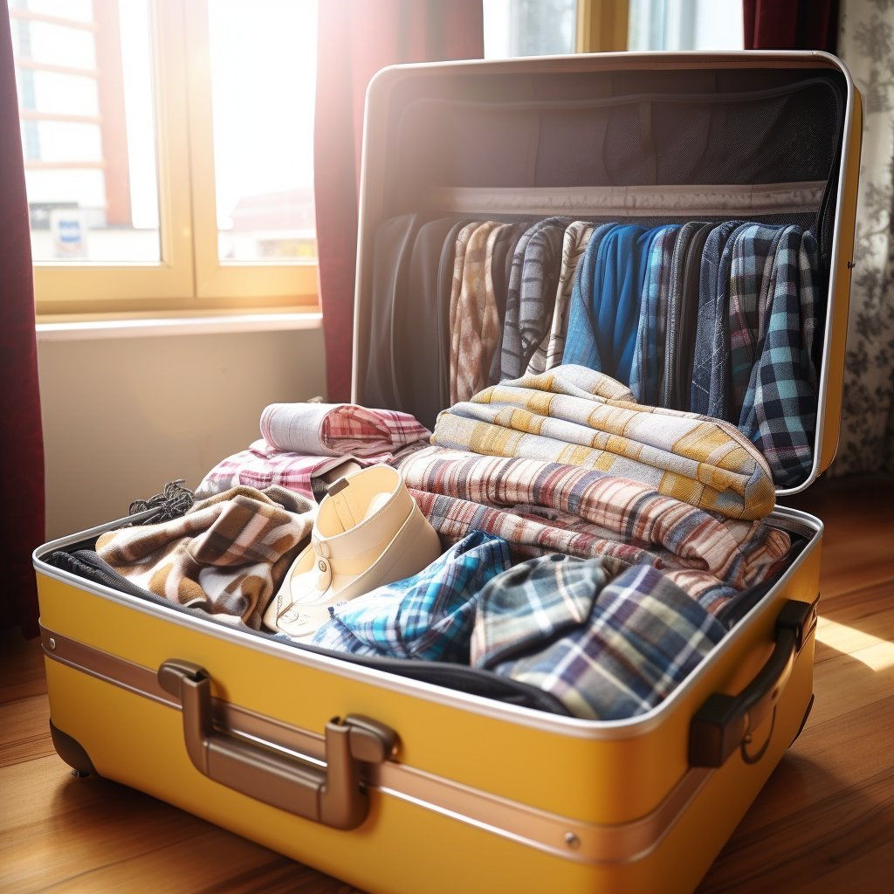

Voyage minimaliste : que mettre dans vos valises ?
Des conseils pratiques pour ne pas surcharger vos bagages.
Voyager léger est un art ! Apprenez à optimiser chaque espace de vos bagages. Pensez à des vêtements multifonctions, des accessoires compacts et des produits essentiels pour un voyage sans stress.
Lire plus

Les destinations les plus tendance en 2025
Explorez des lieux enchanteurs à ne pas manquer cette année.
2025 est l'année des destinations surprenantes ! Découvrez les charmes cachés de l’Asie, les paysages immaculés de l’Arctique et les villes dynamiques comme Tokyo et Cape Town. Préparez votre liste !
Lire plus
Pourquoi voyager seul peut tout changer
Découvrez les bienfaits d’un voyage en solo.
Voyager seul, c’est une aventure personnelle unique. Vous apprenez à sortir de votre zone de confort, à faire des rencontres inattendues et à explorer selon vos envies. Lancez-vous dans cette expérience transformative !
Lire plus